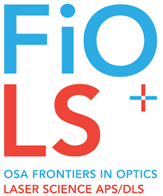
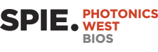

Awarded in recognition of excellence in teaching undergraduate physics classes.
In recognition of excellent efforts towards my research project, "Comparison of optical coefficients extracted from in-vivo and ex-vivo samples using an Integrating Sphere and Inverse Adding Doubling Algorithm", a total amount of 1000$ was allocated by the Office of Undergraduate Research at Miami University to help fund my research.
This award was granted by Miami University, in recognition of being accepted to present a poster at the annual SPIE Photonics West event (Jan 2018), on the topic "Extracting broadband optical properties from uniform optical phantoms: Inverse Adding-Doubling & Integrating Sphere". The awards covers travel and hotel expenses to attend the conference in California.
This award was given to pursue the topic, "The reliability and accuracy of estimating heart-rates from RGB video recorded on a consumer grade camera." at OSIM lab, in collaboration with the Department of Psychology, at Miami University. The award covered expenses to undertake research over the summer of 2017.
Gave a talk on the topic, "A numerical analysis of the impact of finite sample dimensions on calculated reflectance and transmittance of thin turbid samples: Adding-Doubling vs. Monte-Carlo methods." at the Ohio-Region Section of the American Physical Society (OSAPS), to both fellow students and people from the industry.
A poster was presented by mentored/collaborated students on the topic, "Fresnel-based measurement of Complex Refractive Index in Turbid Media: Comparison with Mie Calculations." at the annual Frontiers in Optics (FiO) conferece.
Gave a talk on the topic "Extracting broadband optical properties from uniform optical phantoms: Inverse Adding-Doubling (IAD) & Integrating Sphere (IS)", highlighting the performance of the IAD Algorithm and the effects of changing IS physical attributes.
Presented a poster at the annual SPIE Photonics West conference, on the topic "Extracting broadband optical properties from uniform optical phantoms: Inverse Adding-Doubling & Integrating Sphere" and published findings in the following proceedings.
Presented a poster on the topic, "Extracting optical coefficients using an Integrating Sphere and Inverse Adding Doubling Algorithm" at the Ohio-Region Section of the American Physical Society (OSAPS), to both fellow students and people from the industry.
Presented a poster on the topic, "Extracting optical coefficients using an Integrating Sphere and Inverse Adding Doubling Algorithm", highlighting the basics of diffused reflectance spectroscopy and its ability to provide structural information of turbid media. This conference was an opportunity to engage prospective Miami undergraduates (High School Seniors) to pursue STEM research.
Presented a poster on the topic, "On the possibility of extracting heart-rates from RGB videos recored using consumer cameras.". Elaborated the theory that goes behind the algorithm developed to extract accurate heart-rates.